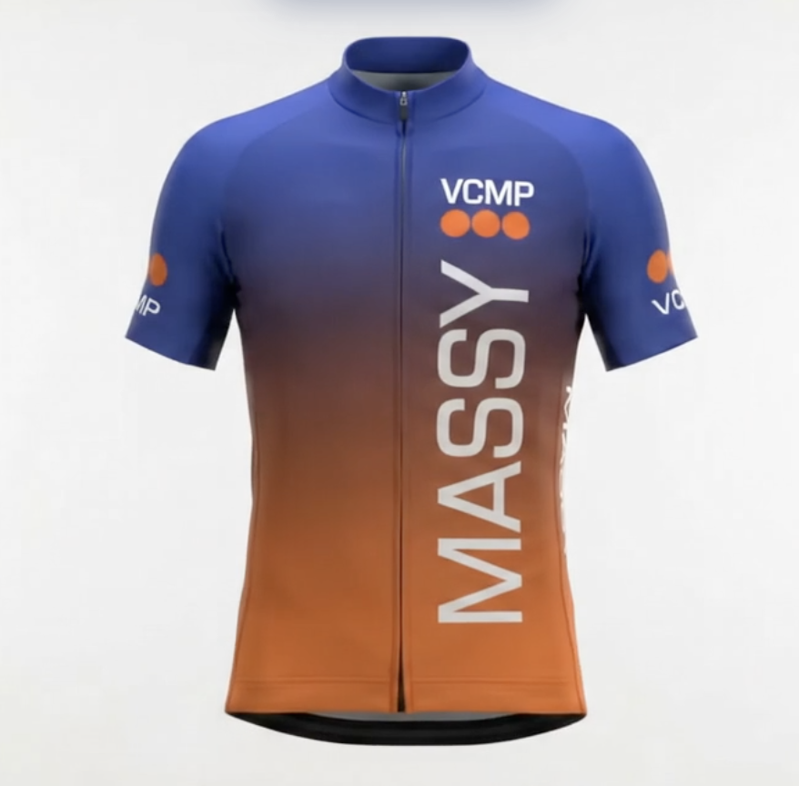

Cyclotourisme · Massy · depuis 1948
*Vous pouvez pratiquer 3 essais le dimanche matin, pour trouver le groupe qui vous convient.
Bienvenue
Bienvenue sur le site du Vélo Club Massy 91, club de cyclotourisme créé en 1948, affilié à la Fédération Française de Cyclotourisme. Sorties du dimanche matin, randonnées et rallyes le week-end avec les clubs voisins, séjour annuel, sorties familiales et événements conviviaux.
Rendez-vous chaque dimanche matin au parking de la Recyclerie Sportive de Massy, quel que soit votre groupe.
Le week-end, en dehors du programme du dimanche, avec les clubs voisins de l'Essonne et d'Île-de-France.
Envie de découvrir le club avant de vous inscrire ? Venez rouler avec nous trois fois, sans engagement.
Séjour cyclotouriste chaque année, sorties familiales et participation à la Fête des sports de Massy.
Le club sera présent le samedi 5 septembre 2026, de 10h à 18h, au Parc Georges-Brassens — stand B-105. Venez nous rencontrer !
Gilet et manche courte disponibles dès maintenant. La version manche longue est en fabrication et sera bientôt disponible à la commande.

Gilet
Disponible
Manche courte
Disponible
Manche longue
En fabricationRendez-vous du dimanche
Parking de la Recyclerie Sportive de Massy, Place Pierre Semard (ancienne gare RER C).
Nous écrire
Le programme détaillé est mis à jour chaque semaine dans la section "Programme des groupes", et les dernières nouvelles du club dans "La vie du Club".